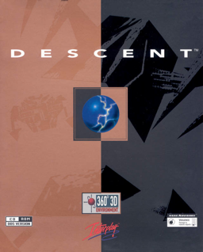

Shooter · 1995
Descent
Six degrees of freedom; the only shooter that got you lost in three axes.

Cover: Wikipedia: Descent (video game)
Facts
- Released
- 1995-03-17
- Genre
- FPS
- Category
- Shooter
- Platforms
- PC, PlayStation
- Developers
- Parallax Software
- Publishers
- Interplay Entertainment, MacPlay